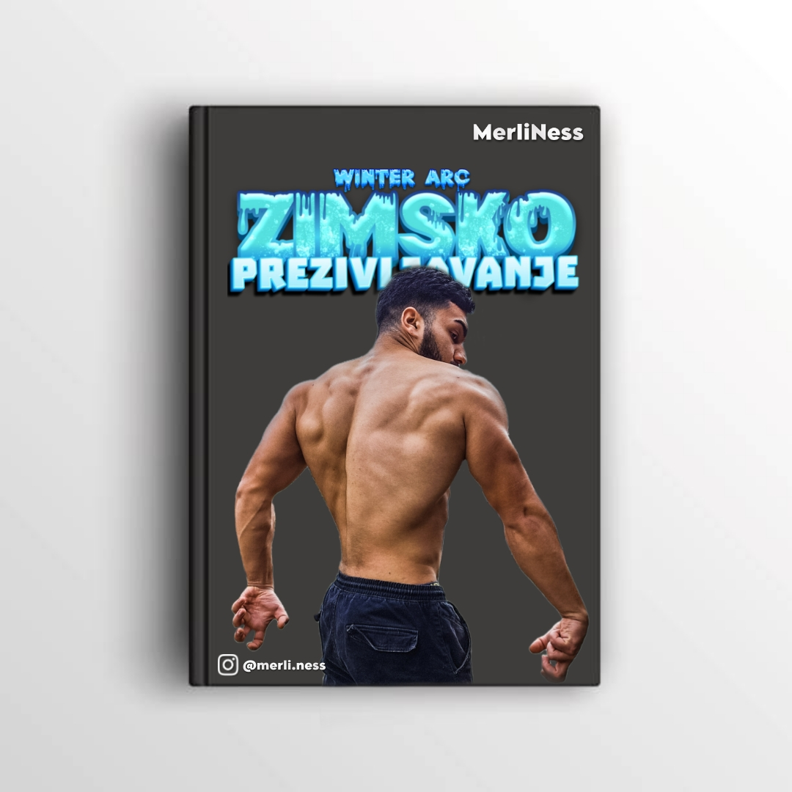
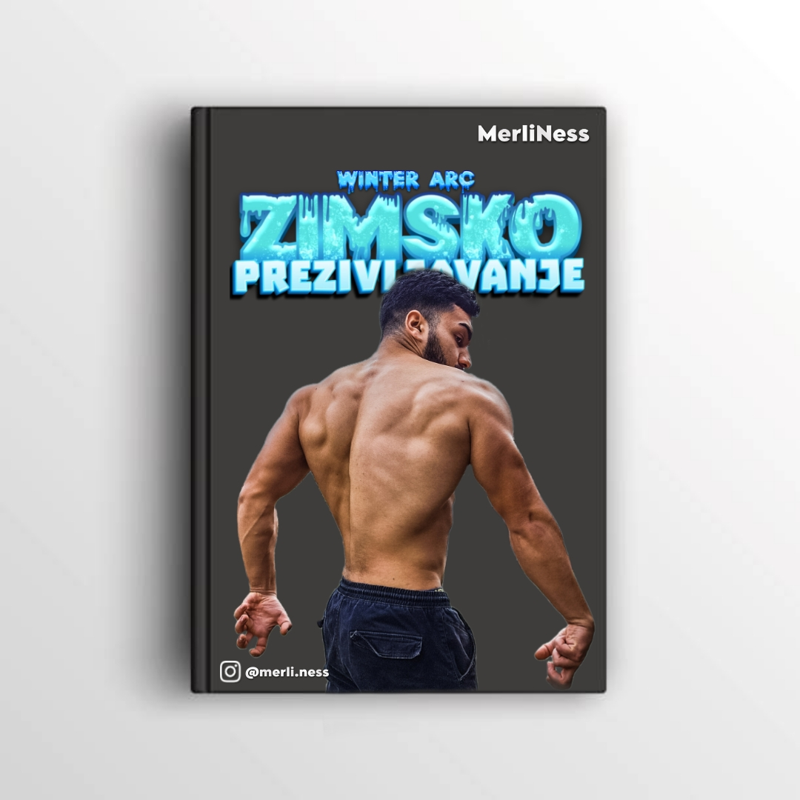
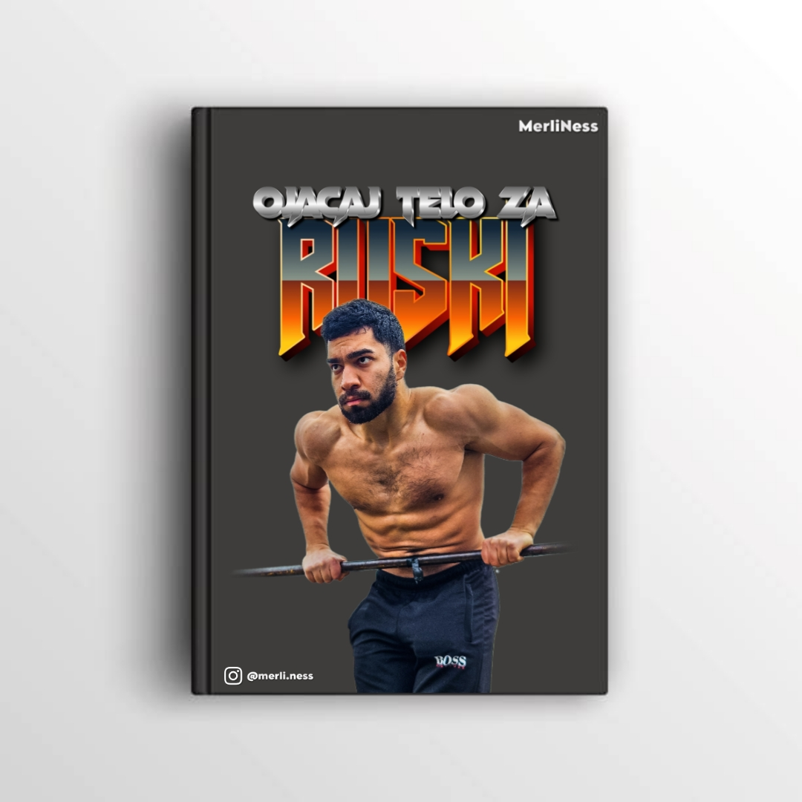
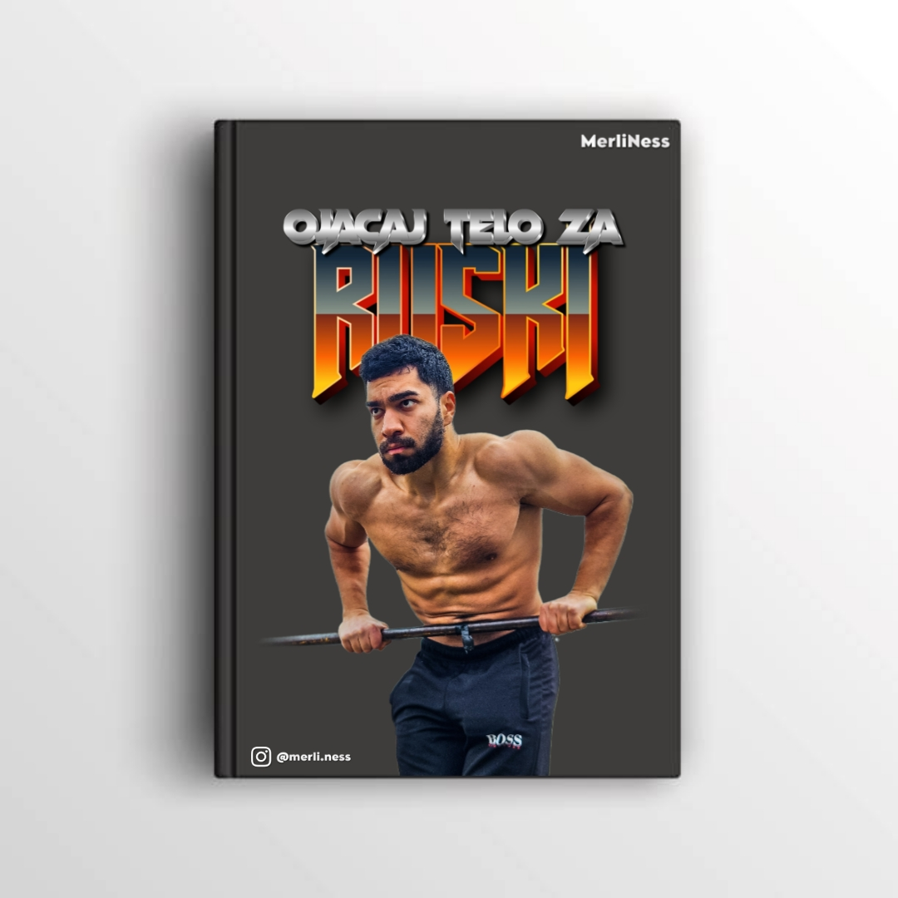

Online Mentorstvo
Ovo je često podcenjena usluga, ali izuzetno važna. Bez online mentorstva i jasnog plana, možeš praviti greške o kojima nisi ni svestan. Sa mentorstvom, bilo da je putem Discord grupe ili privatno, uvek možeš da mi se obratiš i razjasniš sve što ti nije jasno!

Trening
Plan treninga od 8-9 nedelja, prilagođen baš tebi! – Svaki plan se pravi specijalno za tvoje ciljeve, nivo fizičke pripremljenosti i potrebe.

Discord
Mesto gde se vodi online mentorstvo, ali i mnogo više! Ovde se nalaze video treninzi za trup i noge (prati - radi), kao i izazovi koji se postavljaju na nedeljnom nivou, kako bi tvoj napredak bio konstantan.

Ishrana
Ishrana, usklađena sa tvojim ciljevima! – Plan ishrane koji je razvijen da ti pomogne da postigneš rezultate koje želiš, bilo da je reč o mršavljenju, izgradnji mišića ili održavanju forme.

 

 
